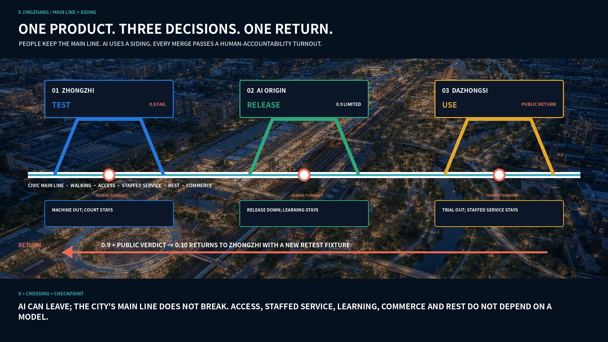

CAN IT WORK INSIDE THE LIMIT?
ONE PRODUCT. THREE DECISIONS. ONE RETURN.
0.8 breaches its boundary at Zhongzhi; 0.9 is released with limits at AI Origin; public objection at Dazhongsi triggers RETURN; 0.10 goes back to Zhongzhi with a new fixture.
